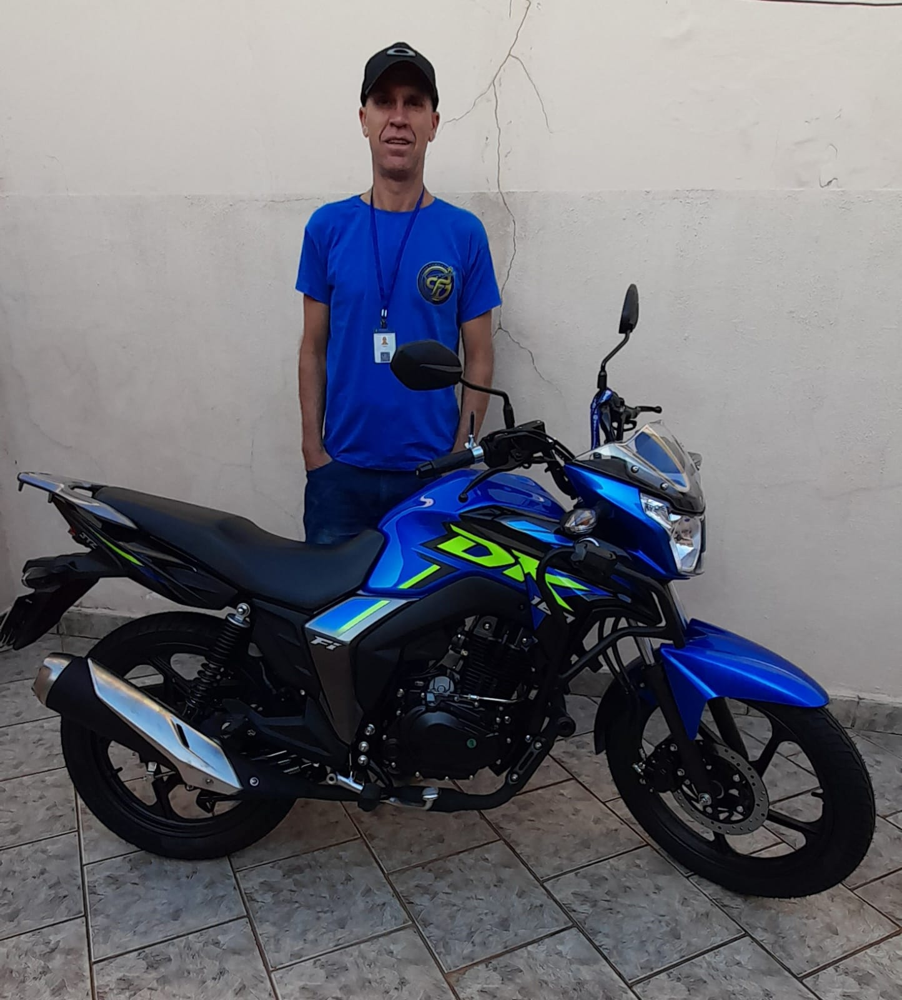

Focado em quem precisa de atenção real: iniciantes, idosos e neurodivergentes. Aqui você domina o trânsito com segurança. No carro, jogamos no nível hard: treinamento em carro analógico manual, porque quem aprende a mecânica real pilota qualquer automático de olhos fechados.
O trânsito é para todos. Desenvolvi um método técnico focado na individualidade de perfis que exigem paciência e processos adaptados.
Abordagem estruturada para pessoas com TDAH, Autismo (TEA) e alta ansiedade. Sem estímulos confusos, com instruções cirúrgicas, previsíveis e focadas no gerenciamento da sobrecarga sensorial. Sem pressões desnecessárias.
Aprender a dirigir ou retomar a prática após os 60 anos exige um ritmo de respeito. Foco na construção gradual dos reflexos, segurança preventiva e total paciência para explicar cada comando mecânico quantas vezes for preciso.

Carros muito novos facilitam tudo artificialmente eletrônica afora, mas não ensinam o aluno a "sentir" o veículo. Eu uso um veículo mecânico, puramente analógico. Isso é uma vantagem pedagógica imensa.
Do controle inicial da ansiedade à aprovação técnica definitiva.
Foco na sensibilidade do veículo clássico. Controle de pedais, tempo de marcha e desenvolvimento de visão periférica defensiva.
Equilíbrio progressivo, circuito técnico (slalom, rampa, cones) e controle fino de aceleração. Do absoluto zero à excelência.
Aulas focadas em neurodivergentes e idosos. Comunicação sem ambiguidades, rotinas fixas e paciência total no desenvolvimento.
Tratamento prático para habilitados que travam ao volante. Retomada em locais tranquilos até alcançar autonomia em vias expressas.
Treino em percursos reais mapeados em Campinas. Correção cirúrgica dos pontos específicos que os examinadores pontuam.
Dicas e ajustes para quem dominou o carro analógico e quer migrar para as facilidades eletrônicas com segurança.
Mapeamento completo de todas as alterações de exigências das bancas avaliadoras de Campinas e região.
Sem revezamento de alunos. Cem por cento do tempo útil da aula voltado para o seu progresso mecânico e mental.
Ambiente acolhedor livre de pressões. Excelente índice de superação de traumas em condutores de todas as idades.
Opções de horários flexíveis que respeitam os momentos de menor fluxo para quem está iniciando ou possui ansiedade extrema.
A pedagogia do carro clássico manual desenvolve no aluno uma segurança estrutural impossível de ser replicada em sistemas cheios de automação.
Esclarecimento de dúvidas e ajustes operacionais feitos diretamente com o instrutor de forma direta e sem filas.
Por causa do meu TDAH, o barulho e a pressão da autoescola me faziam travar. O Cléssio usou uma didática super direta, sem enrolação. Aprender no carro analógico me deu o controle total das pernas e da atenção. Passei direto!
Tinha pavor de carro manual, achava que ia deixar morrer em toda subida. O Cléssio me ensinou a ler o motor naquele carro clássico dele. Hoje peguei um automático da empresa e parece brincadeira de criança. Método sensacional.
Voltei a tentar dirigir aos 67 anos. Todo mundo me tratava com pressa. O Cléssio foi de uma paciência de ouro. Respeitou meu tempo, me passou segurança e hoje vou ao supermercado sozinha de carro.
Atendimento estendido com flexibilidade operacional planejada.
As rotas são planejadas para iniciar em locais de baixa complexidade, evoluindo conforme a segurança do aluno.
O carro analógico manual exige controle total de coordenação de embreagem e leitura auditiva/tátil do motor. Uma vez que seu cérebro cria essa automação e sensibilidade física real, comandar um veículo moderno com câmbio automático se torna instantâneo, pois você já sabe ler as reações e a física do veículo perfeitamente.
A didática é reestruturada. Reduzimos explicações abstratas e focamos em referências visuais e mecânicas exatas. Para neurodivergentes, eliminamos a pressão verbal e respeitamos os limites de sobrecarga sensorial. Para a melhor idade, trabalhamos o reforço gradual da confiança e automatização mecânica sem pressa.
Não é obrigatório. Desenvolvemos o treinamento inicial nos veículos de instrução (incluindo o carro manual analógico clássico). Posteriormente, o treino pode ser portado e adaptado para o veículo particular do aluno para validação de garagem e caminhos rotineiros.
Alinhamento inicial direto via WhatsApp. Sem intermediários, sem burocracia comercial. Atendimento técnico especializado.
Entenda a importância de dominar as engrenagens e o ponto de embreagem raiz antes de ir para o automático.
Como gerenciar o foco visual e a ansiedade periférica na hora de tirar a CNH.
Processos psicomotores e exercícios práticos para manter a total autonomia nas vias urbanas.